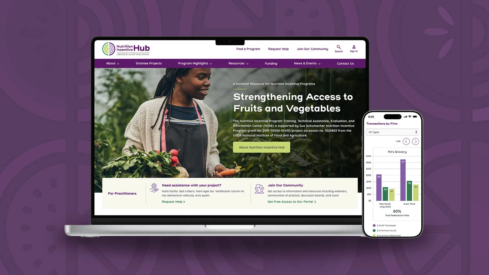
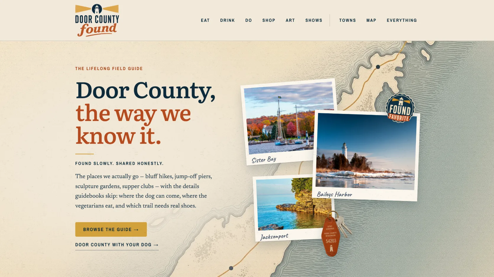
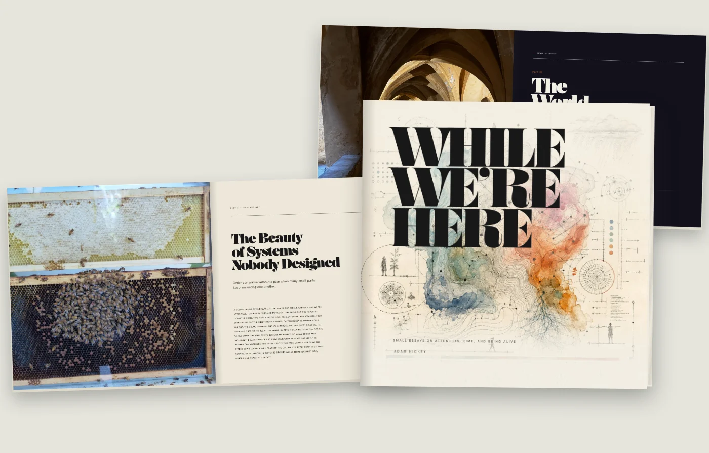
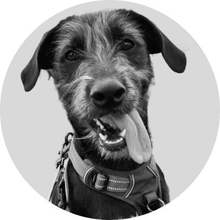

Senior Product Designer · Open to remote or hybrid roles
Digital experiences made clear, distinctive, and precise.
Twenty years across visual design, interactive experiences, and enterprise software. I bring clarity to complex products and personality to digital experiences, from the first concept to the finished details.
- Design systems that people and agents build from
- Prototypes working ones, built with coding agents
- Accessibility built in, and checked on every change
- Complex workflows operational software, up close
- Agent boundaries what it does alone, what a person decides
- Research through to shipped product


Selected work

Making 40+ enterprise apps feel like one product
Systems, governance and scale: one design system and one accessibility standard across 40+ apps, with the numbers to show for it.

Grant tools unified into one trusted platform
Research, accessibility and a measured change: one portal replacing spreadsheets, and a 45-to-55-hour process down to just over ten.
A global innovation network on one brand and platform
A brand carried into a product: one identity for a worldwide innovation network, through badges, illustration and communications to its internal platform.
Agents build the screens. I decide what ships.
An agent moved a billing screen onto the design system and stopped at one link. Should cancelling be this hard to find?
Agent Review, my working prototype, follows one feature from a support ticket to what ships.
On a billing settings screen, every action is a button except “Cancel subscription”, small gray text built by hand. The checks pass both; only a designer can say if that’s on purpose.
Every action is a button. Except cancel.
-
A design-system button
-
Cancel subscription
Gray text, built by hand
How I Work
What I do inside a product organization
Four things I’ve done for twenty years, each with a page of its own.


Built end to end
I’ve built what I design since my first job. These four I made end to end with AI: two products handed to the people they were made for, a print studio of my own, and a book. This site is built the same way.

Door County Found
A guide to the peninsula built for my sister: every place is data, so the filters are real, and she keeps it current.

Lucy Learns
A dog trainer’s handouts turned into sessions you can run with a leash in one hand: one instruction a screen, offline.

Faunaform
Seven Minnesota animals, one for each hour of a day. An image model draws, software I built makes each printable, and the art calls are mine.

While We’re Here
A hardcover of small essays that began as talk with an AI on lake walks, and is built like software: HTML and CSS to a press-ready PDF.
About
Adam Hickey is a senior product designer in Minneapolis, Minnesota, who designs and builds software that has grown complicated: enterprise platforms, design systems, operational workflows, and how people and AI agents work together, after twenty years of studio design and development, then enterprise consulting.
Complicated software is my favorite kind of problem. It took twenty years and two careers to be able to say that.

Design and build · 2005-2013I started as a hybrid designer and developer, eight years across three studios, the last five at Pixel Farm. Designing and building weren’t separate jobs yet. Whoever shipped it sat close enough to argue with.

Systems · 2013-2026Then the jobs split, and I spent thirteen years at RBA on large enterprise products for CBRE, Toro, Banner Bank and International Trucks. I learned that most design problems are communication problems, and that coherence at scale takes systems.
The longest engagement was building a UX practice inside a global enterprise. Some of it I explained in public, to a user group with the same problems.

Design and build, with agents · 2026–nowSince RBA I’ve been building independently with coding agents: two products in use, a print studio’s production line, client work and a lab of working prototypes.
At RBA I chose the practice over the code. I led the UX work, and developers built from my designs and direction. Coding agents changed that: now I can design and build, and judgment is the scarce part.
What I want next is one team, and a product complicated enough to be worth years.
The test I still use is one question: when the project ends, is the team better at this than it was?

(Lucy approves of this message from her curled-up spot nearby)